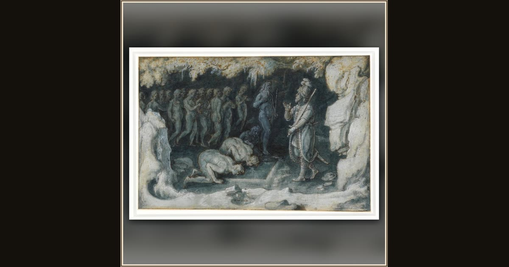

Ulysses at the Entrance of Hades
Johannes Stradanus · c. 1600–1605 · Museum Boijmans Van Beuningen · Rotterdam, Netherlands
At the smoky doorway of the Underworld, gentle ghosts drift up to meet Ulysses — the strangest and bravest stop on his long voyage home. Explore its place in Book XI of the Odyssey.